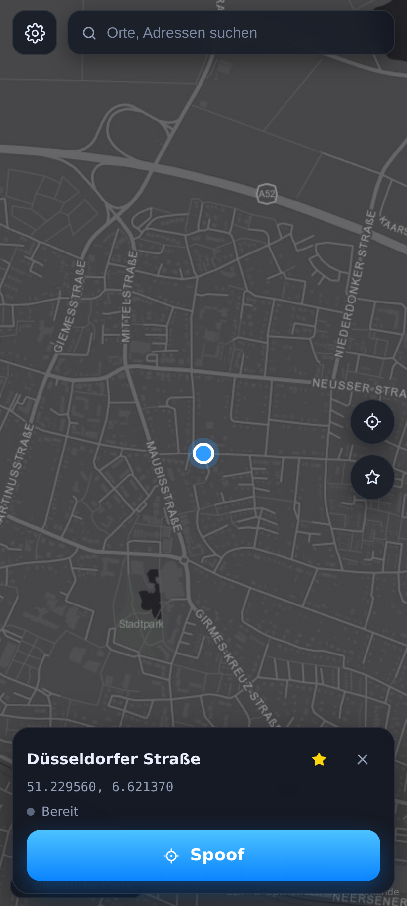
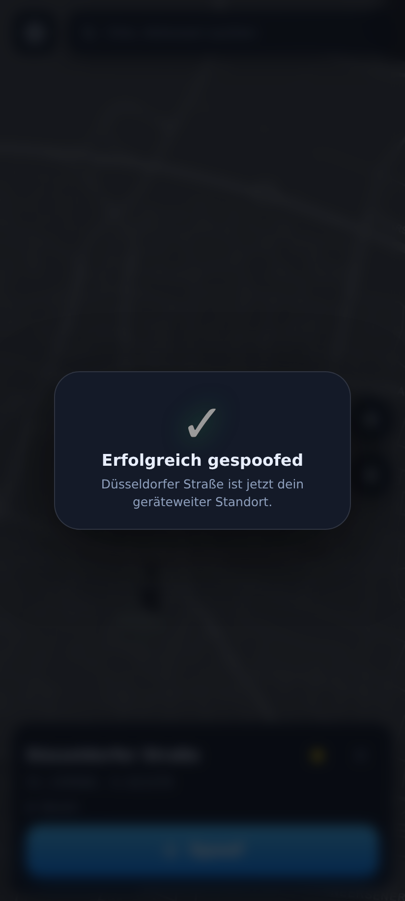
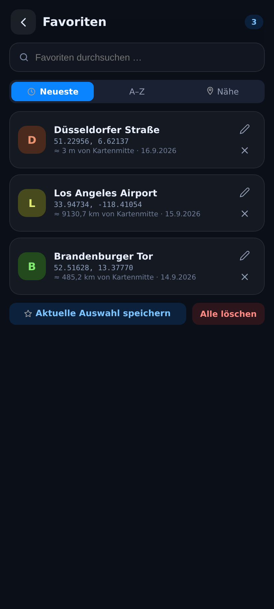
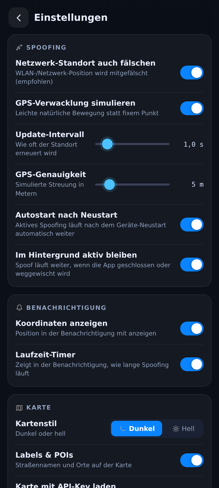
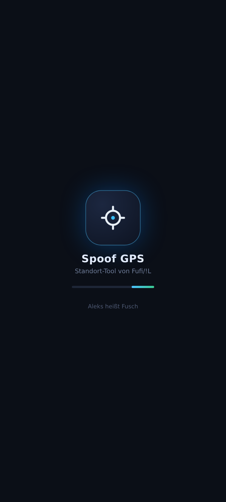

Fusch ändert den GPS-Standort deines Android-Handys systemweit – mit Karte, Suche, Favoriten, echten Straßen-Routen, Verlauf und automatischen Updates. Ohne Root, jederzeit stoppbar.

So sieht Fusch auf deinem Handy aus – Spoof-Vorgang, Favoriten, Einstellungen.




Ein komplettes Standort-Tool – ohne Abo, ohne Werbung, ohne Root.
Tippe auf die Karte, ziehe den Marker oder wähle einen Ort – der Standort gilt systemweit für alle Apps.
Start + Ziel wählen, Gerät wählen (Gehen / Fahrrad / Auto) – OSRM berechnet wie Google Maps den Weg über echte Straßen. „Losfahren" und der Standort bewegt sich realistisch.
Orte speichern, umbenennen, durchsuchen und nach Name oder Entfernung sortieren.
Jeder Spoof und jede Route landet automatisch im Verlauf – mit einem Tipp wiederherstellen.
Spoofing überlebt den Geräte-Neustart und läuft weiter, wenn die App geschlossen wird.
Schlüssel werden verschlüsselt gespeichert und nur im nativen Code verwendet – nie im WebView sichtbar.
Die App prüft beim Start diese Website und zeigt bei einer neuen Version direkt den Download an.
Orte und Adressen weltweit finden – mit eigenem Geo-API-Key noch schneller.
Dauerbenachrichtigung mit Ortsname, Koordinaten und Laufzeit-Timer – inkl. Stoppen-Button.
Einmal einrichten, dann nur noch: Ort wählen → Spoof.
Fusch herunterladen und öffnen. „Installation aus unbekannten Quellen" erlauben – bei Sideloading normal.
Entwickleroptionen → Standort-Override-App auswählen → Fusch. Die App zeigt dir den Weg direkt in der Anleitung.
Ort auf der Karte wählen (oder Route planen) und auf Spoof tippen – fertig. Stoppen jederzeit per Knopfdruck.